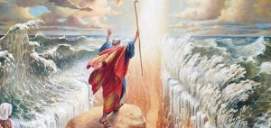
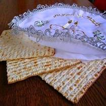
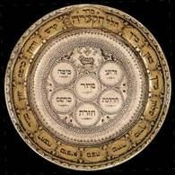

Tijdens Pesach vieren de Joden hun bevrijding uit de slavernij in Egypte en de uittocht uit dat land. Dit wordt gezien als het begin van de geschiedenis van het Joodse volk. De naam “Pesach” komt van het Hebreeuwse stamwoord Pee-Samech-Chet wat ‘passeren’ of ‘overslaan’ betekent. Het betreft het feit dat God de huizen van de Joden “oversloeg” toen Hij de eerstgeborenen van Egypte doodde. In het verhaal van Pesach speelt Mozes een belangrijke rol. Hij moest van God voor de machtige farao pleiten voor vrijlating van het volk Israël. De farao liet het volk pas gaan toen er verschillende plagen door God over het land waren verspreid.
De avond voor de uittocht werd de Pesachtraditie ingesteld, gesteund door voorschriften die Mozes had gekregen men moest met een bosje hysop bloed van een 'vlekkeloos' geslacht lam smeren op beide deurposten en de bovendorpel; men moest staande en met reiskleren aan een maaltijd eten van ongezuurd brood, en het gebraden vlees van het offerdier. Slaven mochten wel mee-eten, maar alleen als ze besneden waren. Dat gold ook voor vreemdelingen, bijwoners en dagloners. Het Pesach moest thuis gevierd worden en geen stukje vlees mocht naar buiten gebracht worden. Er mocht geen been van het dier gebroken worden. Heel Israël moest dit vieren.
Het Pesachfeest is gebaseerd op de tekst uit Exodus 12:15-20.
Exodus 12:15-20 Zeven
dagen zult gij ongezuurde broden eten; dadelijk op de eerste dag zult gij het zuurdeeg
uit uw huizen verwijderen, want ieder die iets gezuurds eet, van de eerste dag
tot op de zevende dag, zo iemand zal uit Israël worden uitgeroeid. Zowel op de
eerste als op de zevende dag zult gij een heilige samenkomst hebben; generlei
arbeid zal daarop verricht worden; slechts wat door ieder gegeten wordt, dat
mag door u bereid worden. Onderhoudt dan (het feest der) ongezuurde broden,
want op deze zelfde dag leid Ik uw legerscharen uit het land Egypte. Daarom
moet gij deze dag onderhouden in uw geslachten als een altoosdurende inzetting.
In de eerste (maand), op de veertiende dag der maand, des avonds, zult gij
ongezuurde broden eten, tot aan de eenentwintigste dag der maand, des avonds.
Zevendagen zal er geen zuurdeeg in uw huizen gevonden worden, want ieder die
iets gezuurds eet, zo iemand zal uit de vergadering van Israël worden
uitgeroeid; hetzij hij een vreemdeling, hetzij hij in het land geboren is.
Niets wat gezuurd is, zult gij eten; gij zult in al uw woonplaatsen ongezuurde
broden eten.
Tegenwoordig symboliseert de exodus (uittocht) van slavernij naar vrijheid het algemene verlangen van Joden om als vrije mensen te kunnen leven. Daarnaast is in het feest het samenzijn met de familie erg belangrijk. Volgens een Joods voorschrift nodigt men daarbij anderen uit, die geen verwanten hebben.
Pesach duurt zeven of acht dagen en begint op de avond van de 15e Nissan die in maart of april kan vallen. De joodse kalender is een maankalender, die schrikkelmaanden kent om te zorgen dat de kalender in de pas blijft lopen met de zonnekalender. De Joodse kalender is met de schrikkelmaanden zo aangepast dat Pesach altijd in de lente valt (in Israël). Zodoende begint Pesach op de eerste volle maan na de lente-equinox, het begin van de lente. Pesach eindigt in Israël op de 21e Nissan en daarbuiten op de 22e nissan. Van alle Joodse feestdagen wordt Pesach het meest algemeen gevierd. Pesach is oorspronkelijk een pelgrimsfeest. Toen de tempel in Jeruzalem nog bestond, trokken alle Joden naar Jeruzalem om er offers te brengen.
Voordat Pesach begint vindt een grote schoonmaak plaats op grond van Exodus 12:15 en wordt in elk geval door orthodoxe Joden het gehele huis gereinigd van alle mogelijke resten van gerezen brood en gist. Ook wordt het servies afgewassen of er wordt zelfs een apart servies gebruikt. De avond voor Pesach wordt het huis met een kaars doorzocht om de laatste resten te vinden. De volgende ochtend wordt al het gist ritueel verbrand. Met kinderen wordt er een spel van gemaakt, de kinderen verstoppen de laatste stukjes brood of gist, en de ouders moeten zoeken, terwijl de kinderen "warm" en "koud" roepen als de ouders dichterbij of verderaf zoeken.
Matzes
Door het eten van ongezuurde broden wordt herdacht dat de Israëlieten tijdens hun vertrek uit Egypte geen gerezen brood konden eten vanwege tijdsgebrek. Ook andere met gist gerezen producten mogen niet worden gegeten. Het verbod slaat op alle andere soorten brood en op alle andere deegwaren. (Ex. 12:39). In Deut. 16:3 wordt het genoemd: ‘brood der verdrukking’ of ‘brood der ellende’. Paasfeest was ook een oogstfeest; daarbij past dat er een heel nieuw begin gemaakt wordt, dus geen vermenging van het oude brood/zuurdeeg met de nieuwe oogst.
Bij het Paasmaal, de sedermaaltijd, liggen drie matzes op tafel, elk bedekt met een servet - of alledrie in een speciale hoes. De middelste matse wordt op een gegeven moment gebroken en van het kleinste deel wordt gegeten. Het grootste stuk is de afikoman. Dat deel wordt in een servet of handdoek gewikkeld. De kinderen mogen proberen de afikoman weg te nemen, zonder dat degene die de maaltijd leidt dat merkt. De afikoman wordt aan het eind van de maaltijd gegeten. Het werd na de verwoesting van de tempel gezien als een symbolische heenwijzing naar het paaslam. (Daarvoor was het laatste dat gegeten werd een deel van het paaslam)
Sederavond
Het feest vangt aan met één Sederavond. Het gaat om een uitgebreide maaltijd waarbij men een speciale sederschotel gebruikt, en ook de Haggada ligt op tafel. Op tafel staat traditioneel een extra glas wijn voor de profeet Elia.
Op deze avond wordt het verhaal verteld van de Uittocht uit Egypte met anekdotes. Er worden liederen gezongen en als er kinderen aan tafel zitten, stellen zij de vier vragen: waarom is deze avond zo anders dan alle andere avonden? Waarom eten we vanavond alleen matzes? Waarom bittere kruiden? Waarom dopen we twee keer in? Waarom zitten wij anders dan alle andere avonden niet rechtop? Het zijn vragen over slavernij en vrijheid. Onderwerpen die altijd weer mogelijkheid bieden tot levendige discussies aan tafel. Er worden vier bekers wijn (of druivensap) gedronken en een feestmaaltijd (de sedermaaltijd) wordt genuttigd volgens een vrij vast patroon.
Sederschotel
De gehele avond is bedoeld om - op grond van een voorschrift uit de Thora - de Pesachtraditie door te geven aan de jongeren, zij moeten nieuwsgierig gemaakt worden naar de betekenis van de symbolen op de sederschotel, zoals het botje, het bittere kruid, de matzes, het hardgekookte ei, zout water, peterselie etc.
De avond eindigt traditioneel met de wens "Volgend jaar in Jeruzalem" Daarmee drukken Joden in de diaspora de wens uit terug te keren naar het land van oorsprong.
Terug naar: Inhoud